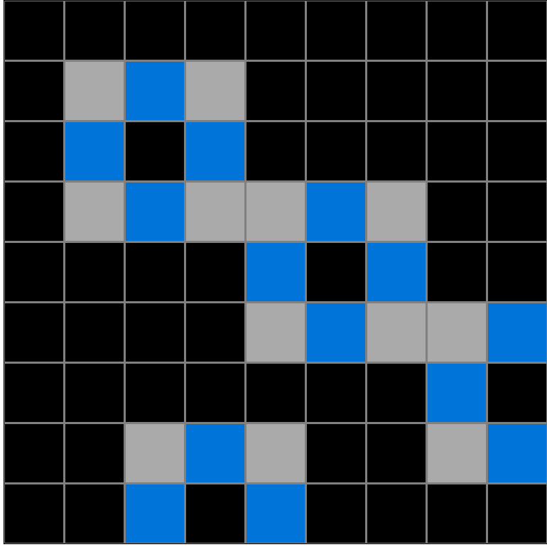
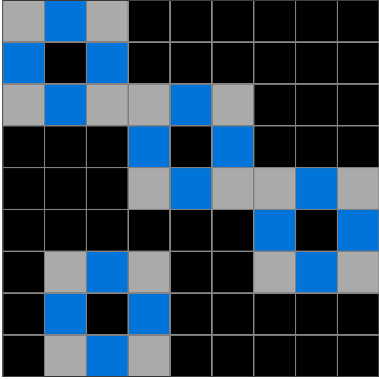
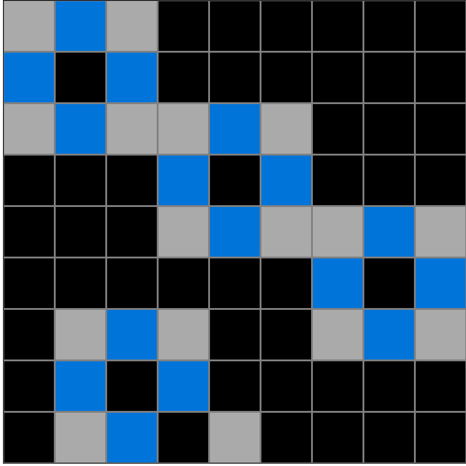

Participant 1
Initial description: I pressed submit by mistake.
Final description: Each gray square in the input represented the top left square of the gray blue gray perimeter pattern.



Participant 2
Initial description: Start with the gray square as the center of a 3 x 3 grid. Then color the four squares that are directly adjacent to the gray square blue, Then color the four squares that are diagonally adjacent to the gray square gray. Finally change the gray square to black.
Final description: Start with the gray square as the center of a 3 x 3 grid. Then color the four squares that are directly adjacent to the gray square blue, Then color the four squares that are diagonally adjacent to the gray square gray. Finally change the gray square to black.

Participant 3
Initial description: Copy test input. Think of every grey square as the center of the larger squares from the output. Place grey squares on all 4 corners of the center grey square, then add blue squares in the middle of those grey squares, just like the example outputs. Once you have the exterior of the larger squares completed, replace all the original center grey squares from the test input to black squares.
Final description: Copy test input. Think of every grey square as the center of the larger squares from the output. Place grey squares on all 4 corners of the center grey square, then add blue squares in the middle of those grey squares, just like the example outputs. Once you have the exterior of the larger squares completed, replace all the original center grey squares from the test input to black squares.

Participant 4
Initial description: The gray cells in the test input become the centers of squares that surround it. The gray cells become black and the cells around them alternate between gray and blue.
Final description: The gray cells in the test input become the centers of squares that surround it. The gray cells become black and the cells around them alternate between gray and blue.

Participant 5
Initial description: I made the gray squares from Test Input black on Test Output and then surrounded it with the blue and gray pattern
Final description: I made the gray squares from Test Input black on Test Output and then surrounded it with the blue and gray pattern

Participant 6
Initial description: Create a 3x3 square with grey in the corners, blue between the grey corners, and black in the center, with the black center being wherever a grey square occurred in the input.
Final description: Create a 3x3 square with grey squares in the corners, blue between the grey squares, and black in the middle. Create these 3x3 squares in each place that there is a grey square in the input, replacing the grey input square with the black center square.


Participant 7
Initial description: The example spots are the center for the output pattern.
Final description: The example spots are the center for the output pattern.

Participant 8
Initial description: create gray boxes with blue crosses around the targets and change the target/center to black
Final description: create gray boxes with blue crosses around the targets and change the target/center to black

Participant 9
Initial description: Center a 3x3 grid around each starting block, make the center block black. There should be four blue blocks, representing the cardinal directions: north, east, south, west. Then the corner blocks should be gray.
Final description: Center a 3x3 grid around each starting block, make the center block black. There should be four blue blocks, representing the cardinal directions: north, east, south, west. Then the corner blocks should be gray.